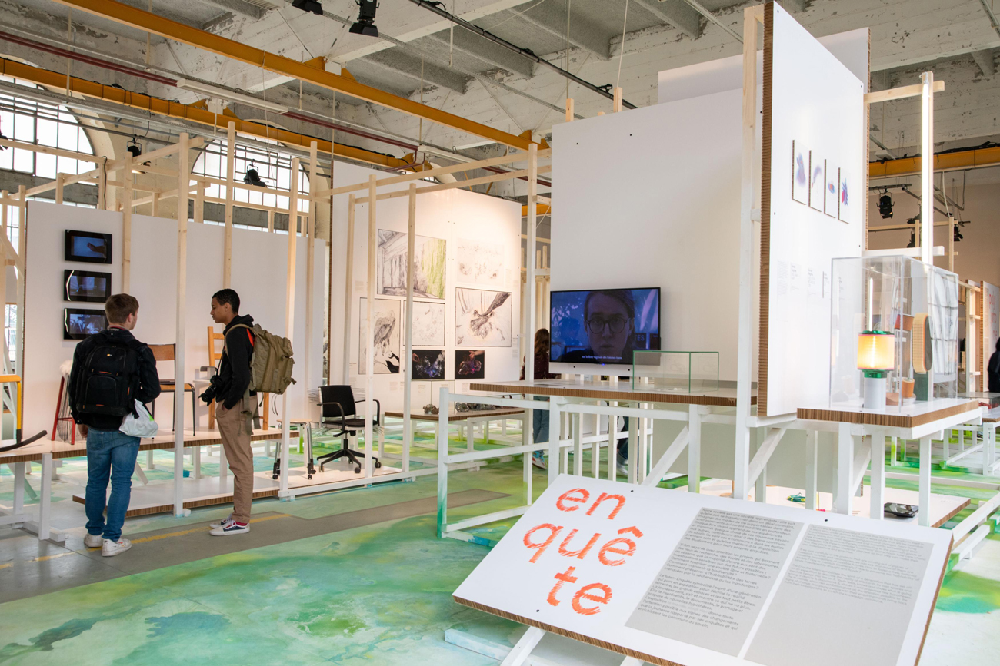
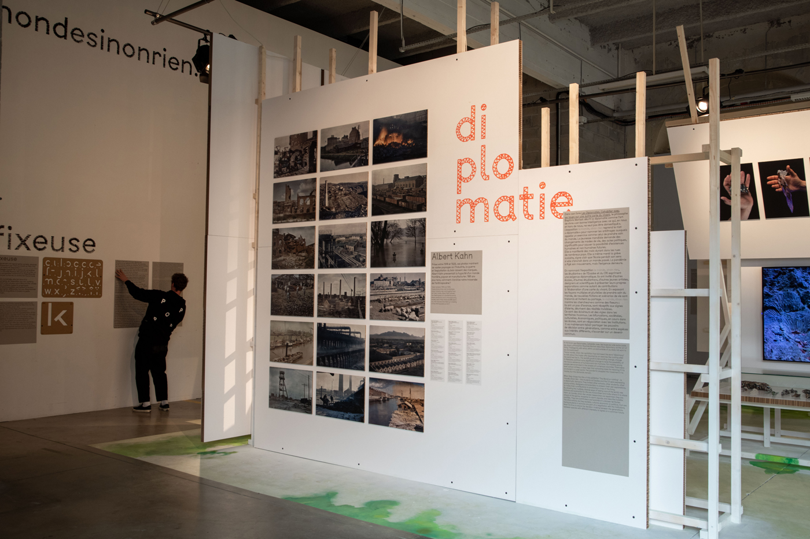
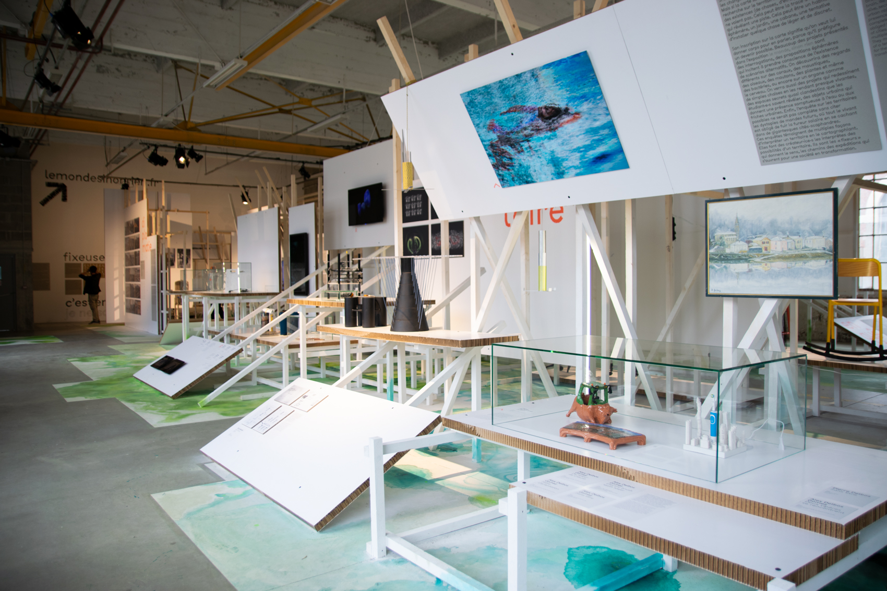
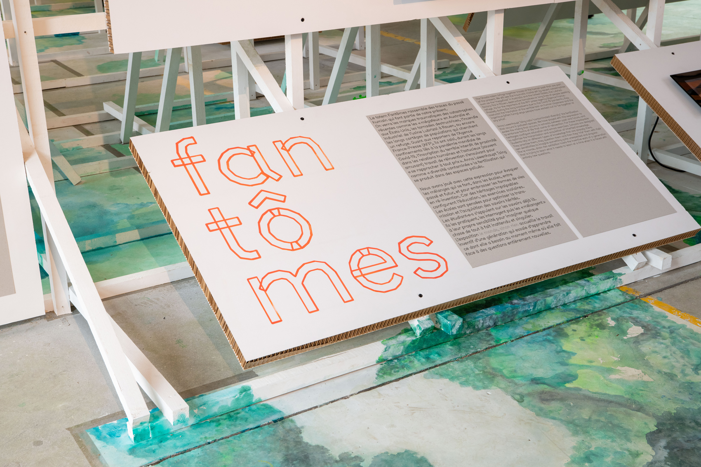
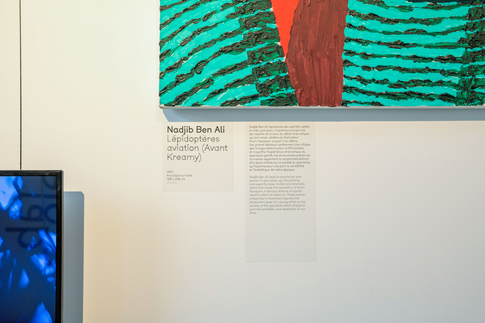
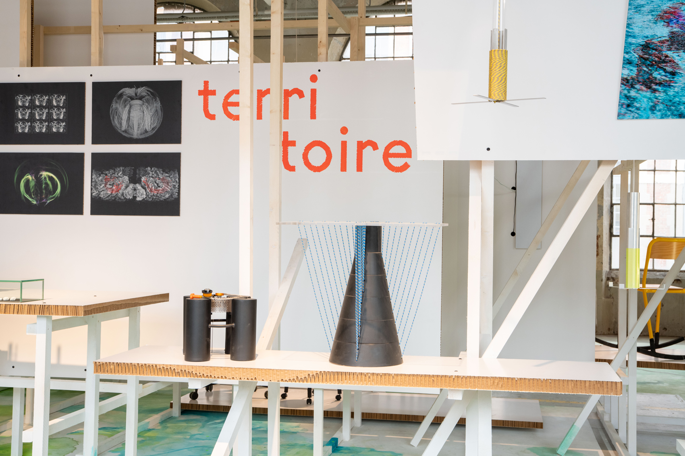
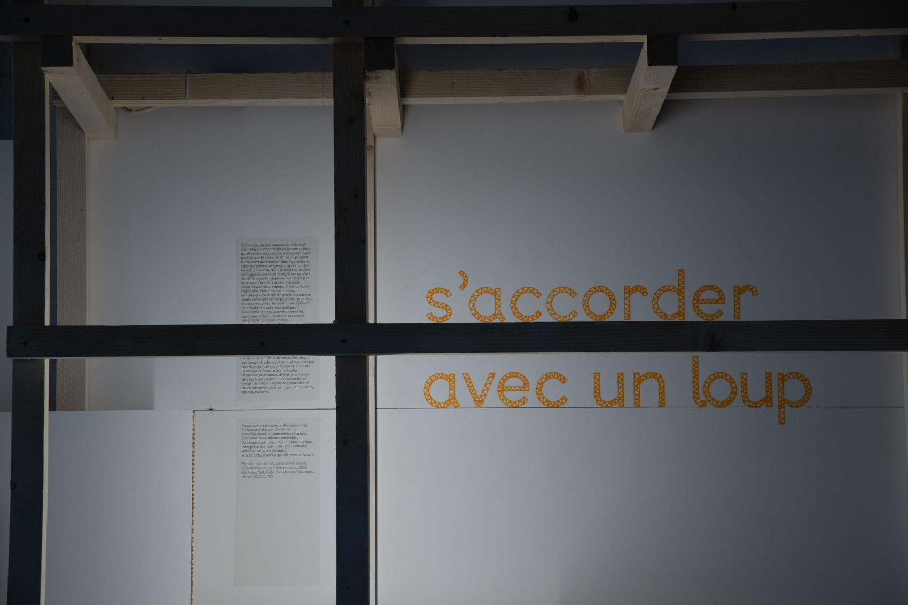
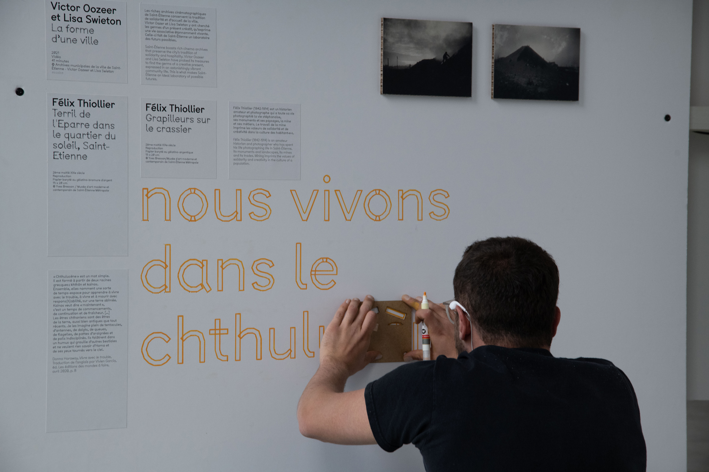
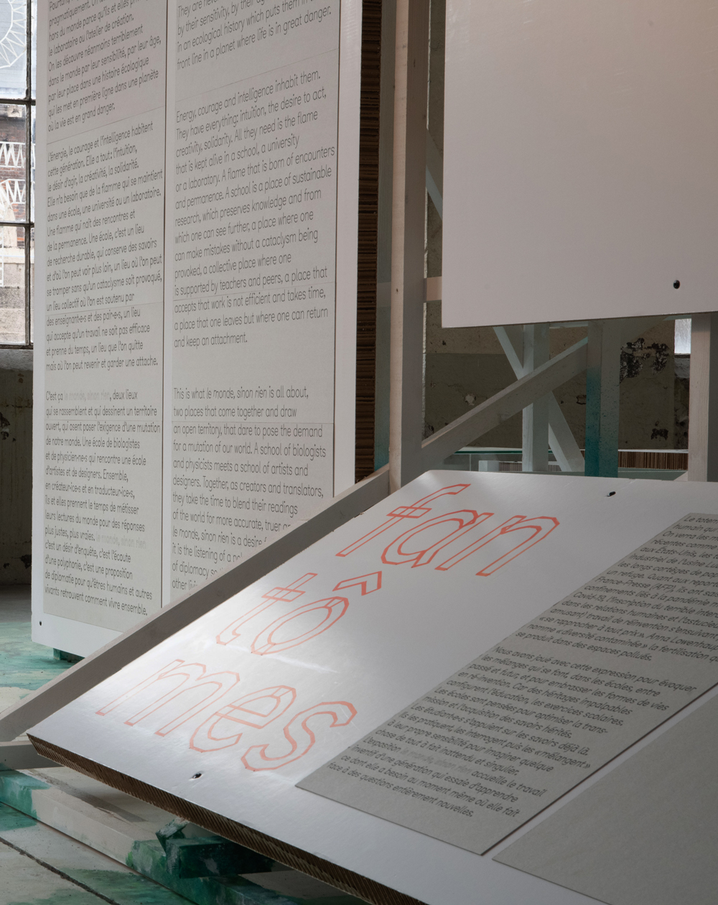

Le Monde, Sinon Rien
2022
En collaboration avec → Thomas Dutoit
Identité visuelle réalisée pour l'exposition « Le Monde, Sinon Rien » dans le cadre de la 12e Biennale Internationale Design de Saint-Étienne 2022. L'identité est réalisée à l'aide de normographes issus de la police de caractère BTP, afin de créer la typographie identitaire de l'exposition → la fixeuse.
Univers 3D/codage du site : Benoît Zenker
Scénographe/Commissaire : Benjamin Graindorge & Sophie Pène
Photographies : © Nicolas Mars & © Alexandre Beltran









